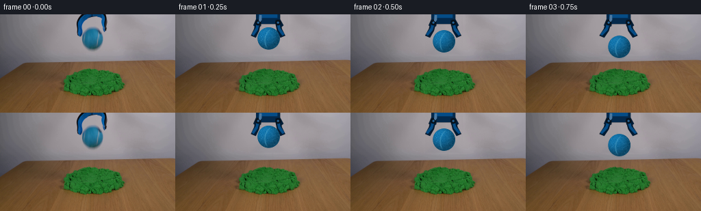
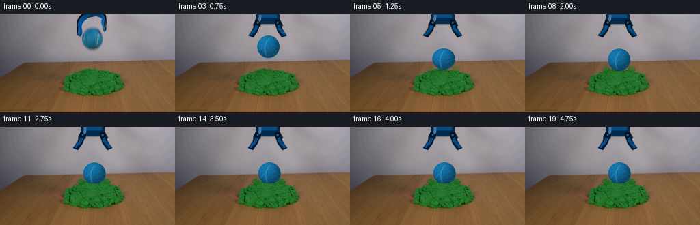

CODING AGENTS AS PIXEL WORLD MODELS
traex/GPT-5.6-Sol · 0017
点击播放 · 原生 RGB 像素
逐轮保存的候选
回放视频、检查图与代码变化。
每份候选均可单独播放。实际图片检查记录在下方工具轨迹中。
候选 01播放与检查图
点击播放 · 原生 RGB 像素

展开代码变化
--- 上一保存版本
+++ 本次保存版本
@@ -0,0 +1,180 @@
+from pathlib import Path
+import cv2
+import numpy as np
+from PIL import Image
+import artifact_io
+
+# Deterministic, entirely local reconstruction/animation of the photographed setup.
+ROOT = Path(__file__).resolve().parent
+src = np.asarray(Image.open(ROOT / "first_frame.png").convert("RGB"), dtype=np.uint8)
+H, W = src.shape[:2]
+assert (H, W) == (144, 256)
+
+# Remove the held object from the wall once it is released. The wide mask is
+# deliberate: it also removes the original antialiased silhouette. OpenCV's
+# inpaint samples only this photograph and leaves its softly mottled wall intact.
+mask = np.zeros((H, W), np.uint8)
+cv2.rectangle(mask, (109, 0), (164, 58), 255, -1)
+clean = cv2.inpaint(cv2.cvtColor(src, cv2.COLOR_RGB2BGR), mask, 7, cv2.INPAINT_TELEA)
+clean = cv2.cvtColor(clean, cv2.COLOR_BGR2RGB)
+# Inpainting at an image edge can be a little flat; restore fine photographic
+# noise by borrowing only the high-frequency residual of neighboring wall.
+wall = src[:, :].astype(np.float32)
+blur = cv2.GaussianBlur(wall, (0, 0), 2.4)
+resid = wall - blur
+for y in range(59):
+ for x in range(109, 165):
+ sx = 75 + ((x - 109) % 28) # blank wall, left of the apparatus
+ clean[y, x] = np.clip(clean[y, x].astype(np.float32) + .38 * resid[y, sx], 0, 255)
+
+# Green kinetic-sand segmentation and its photographed granular texture.
+hsv = cv2.cvtColor(src, cv2.COLOR_RGB2HSV)
+sand_mask = ((hsv[..., 0] >= 36) & (hsv[..., 0] <= 83) &
+ (hsv[..., 1] >= 48) & (np.indices((H, W))[0] >= 72))
+sand_u8 = (sand_mask.astype(np.uint8) * 255)
+sand_u8 = cv2.morphologyEx(sand_u8, cv2.MORPH_CLOSE, np.ones((3, 3), np.uint8))
+
+rng = np.random.default_rng(17031)
+ball_noise = rng.normal(0, 1, (43, 43)).astype(np.float32)
+ball_noise = cv2.GaussianBlur(ball_noise, (0, 0), .48)
+ball_fuzz = rng.random((43, 43)).astype(np.float32)
+
+def alpha_over(im, color, alpha):
+ """Composite an RGB image/color with an HxW alpha field."""
+ a = np.clip(alpha, 0., 1.)[..., None].astype(np.float32)
+ c = np.asarray(color, dtype=np.float32)
+ if c.ndim == 1:
+ c = np.broadcast_to(c, im.shape)
+ return np.clip(im.astype(np.float32) * (1-a) + c * a, 0, 255).astype(np.uint8)
+
+def draw_tool(frame, opening):
+ """Suspended blue-black grabber, with two jaws rotating apart."""
+ S = 4
+ layer = np.zeros((H*S, W*S, 4), np.uint8)
+ # Use high-resolution raster geometry for smooth camera-like edges.
+ def poly(points, color):
+ cv2.fillPoly(layer, [np.array([(int(x*S), int(y*S)) for x,y in points], np.int32)], color, cv2.LINE_AA)
+ def ellipse(c, axes, color):
+ cv2.ellipse(layer, (int(c[0]*S), int(c[1]*S)), (int(axes[0]*S), int(axes[1]*S)), 0, 0, 360, color, -1, cv2.LINE_AA)
+ # Tool body remains fixed at the top of frame.
+ poly([(118,0),(153,0),(153,8),(148,14),(124,14),(118,8)], (4,41,75,255))
+ poly([(122,0),(149,0),(149,5),(122,5)], (5,76,134,255))
+ poly([(118,7),(126,8),(125,17),(119,20),(114,16)], (3,31,57,255))
+ poly([(153,7),(146,8),(147,17),(153,20),(158,16)], (3,31,57,255))
+ # Jaw pivots and arms open symmetrically. opening reaches about five pixels.
+ o = float(opening)
+ poly([(117,10),(125,11),(123-o*.35,24),(119-o,34),(112-o,31),(116-o*.45,21)], (2,27,51,255))
+ poly([(119,11),(123,12),(121-o*.35,23),(116-o,31),(113-o,29),(118-o*.3,20)], (5,76,134,255))
+ poly([(154,10),(146,11),(148+o*.35,24),(152+o,34),(159+o,31),(155+o*.45,21)], (2,27,51,255))
+ poly([(152,11),(148,12),(150+o*.35,23),(155+o,31),(158+o,29),(153+o*.3,20)], (6,77,134,255))
+ ellipse((121,12),(4,4),(7,17,27,255)); ellipse((150,12),(4,4),(7,17,27,255))
+ ellipse((121,12),(1.5,1.5),(40,101,151,255)); ellipse((150,12),(1.5,1.5),(40,101,151,255))
+ # Subtle narrow highlight along the painted housing.
+ poly([(123,1),(126,1),(126,8),(124,11),(122,9)], (18,96,159,150))
+ small = cv2.resize(layer, (W, H), interpolation=cv2.INTER_AREA)
+ a = small[...,3:4].astype(np.float32)/255
+ out = frame.astype(np.float32)*(1-a) + small[...,:3].astype(np.float32)*a
+ return np.clip(out,0,255).astype(np.uint8)
+
+def add_shadow(frame, cx, cy, strength):
+ """Soft ball shadow, constrained to the pile rather than the table."""
+ yy, xx = np.mgrid[:H, :W]
+ height = max(0., 78. - (cy + 16.))
+ sx = 8.5 + .18*height
+ sy = 2.8 + .07*height
+ sh = np.exp(-(((xx-cx)/sx)**2 + ((yy-81)/sy)**2)*1.25)
+ sh *= (sand_u8.astype(np.float32)/255.) * strength
+ return alpha_over(frame, np.array([18,45,21], np.uint8), sh*.38)
+
+def draw_ball(frame, cx, cy, rx=16.4, ry=16.4, motion_blur=0.):
+ """A fuzzy blue tennis ball with spherical light and a curved seam."""
+ yy, xx = np.mgrid[:H, :W]
+ X=(xx-cx)/rx; Y=(yy-cy)/ry
+ q=X*X+Y*Y
+ alpha=np.clip((1.045-q)*10.0,0,1)
+ inside=q<1.08
+ z=np.sqrt(np.maximum(0,1-np.minimum(q,1)))
+ # Upper-left softbox light; retain deep blue at the lower-right edge.
+ dot=np.maximum(0, -.42*X-.58*Y+.70*z)
+ shade=.52+.46*dot
+ base=np.empty((H,W,3),np.float32)
+ base[...,0]=16*shade + 4
+ base[...,1]=105*shade + 16
+ base[...,2]=158*shade + 20
+ # Fixed local texture follows the ball rather than the frame.
+ ix=np.clip(np.rint(xx-cx+21).astype(int),0,42)
+ iy=np.clip(np.rint(yy-cy+21).astype(int),0,42)
+ grain=ball_noise[iy,ix]*5.3
+ base += grain[...,None]
+ # Tennis-ball curved pale seam: an S-like pair of arcs, rotated slightly.
+ ang=-0.20
+ u=(xx-cx)*np.cos(ang)-(yy-cy)*np.sin(ang)
+ v=(xx-cx)*np.sin(ang)+(yy-cy)*np.cos(ang)
+ curve=-5.2 + .027*v*v
+ seam=np.exp(-((u-curve)/1.00)**2)*inside
+ seam *= np.clip((14.5-np.abs(v))/3.0,0,1)
+ base = base*(1-seam[...,None]*.48) + np.array([76,159,194],np.float32)*seam[...,None]*.48
+ # Tiny bright fibers and pits make the surface read as tennis-ball felt.
+ fleck=((ball_fuzz[iy,ix]>.965)&inside).astype(np.float32)
+ base += fleck[...,None]*np.array([11,16,19],np.float32)
+ if motion_blur>0:
+ # only the silhouette has a slight downward exposure trail
+ trail=np.roll(alpha,2,axis=0)*motion_blur
+ frame=alpha_over(frame,base,trail*.20)
+ return alpha_over(frame,np.clip(base,0,255),alpha)
+
+def sand_contact(frame, cx, cy, amount, frame_index):
+ """Granular crater lip in front of the ball plus compacted side clumps."""
+ if amount <= 0: return frame
+ yy,xx=np.mgrid[:H,:W]
+ dx=xx-cx
+ # U-shaped inner surface: low in the middle, raised at its shoulders.
+ surface=(82.8 - .0145*dx*dx) + (1-amount)*5.0
+ lip=(np.abs(dx)<20.5) & (yy>=surface) & (yy<90)
+ # Restrict to source pile support, with a tiny dilation for pushed-up grains.
+ support=cv2.dilate(sand_u8,np.ones((5,5),np.uint8))>0
+ lip &= support
+ edge_alpha=np.clip((yy-surface+1.0)/1.7,0,1)*lip*amount
+ # Sample authentic pile texture from nearby pixels, with coordinate jitter.
+ sx=np.clip((xx + ((yy+frame_index)%3)-1).astype(int),0,W-1)
+ sy=np.clip((yy + 8 + (np.abs(dx)/9).astype(int)).astype(int),82,116)
+ texture=src[sy,sx].astype(np.float32)
+ texture[...,0]*=.92; texture[...,1]*=1.04; texture[...,2]*=.90
+ frame=alpha_over(frame,np.clip(texture,0,255),edge_alpha)
+ # A few coherent crumbs heaped at either side of the impact.
+ layer=np.zeros((H,W,4),np.uint8)
+ col1=(27,111,38,int(225*amount)); col2=(37,124,46,int(190*amount))
+ cv2.ellipse(layer,(int(cx-19),80),(5,3),-12,0,360,col1,-1,cv2.LINE_AA)
+ cv2.ellipse(layer,(int(cx+19),80),(5,3),12,0,360,col1,-1,cv2.LINE_AA)
+ for k,(ox,oy,r) in enumerate([(-23,-1,1),(-17,-4,1),(22,-2,1),(17,-4,1)]):
+ cv2.circle(layer,(int(cx+ox),int(80+oy)),r,col2,-1,cv2.LINE_AA)
+ a=layer[...,3:4].astype(np.float32)/255
+ return np.clip(frame.astype(np.float32)*(1-a)+layer[...,:3]*a,0,255).astype(np.uint8)
+
+# Centers were chosen from the actual 36 px clearance visible in frame zero.
+centers_y=[34.0,34.8,39.0,47.0,58.0,65.0,69.5,64.2,66.2,68.7,
+ 67.3,68.1,67.7,67.9,67.8,67.85,67.82,67.83,67.83,67.83]
+centers_x=[136.0,136.0,136.1,136.2,136.4,136.7,137.0,137.15,137.3,137.45,
+ 137.55,137.62,137.67,137.70,137.72,137.73,137.74,137.74,137.74,137.74]
+# Contact/deformation starts at impact and remains, as expected for kinetic sand.
+contacts=[0,0,0,0,0,.32,.82,.58,.70,.88,.92,.96,.98,1,1,1,1,1,1,1]
+frames=[src.copy()]
+for i in range(1,20):
+ frame=clean.copy()
+ opening=min(5.2, 1.5+(i-1)*1.45)
+ frame=draw_tool(frame,opening)
+ cx,cy=centers_x[i],centers_y[i]
+ # Falling shadow grows and hardens as the ball nears the pile.
+ shadow_strength=min(1., .25+(cy-34)/34*.75)
+ frame=add_shadow(frame,cx,cy,shadow_strength)
+ rx,ry=16.4,16.4
+ if i==5: rx,ry=16.9,15.5
+ if i==6: rx,ry=17.0,15.0
+ if i==7: rx,ry=16.1,16.8
+ frame=draw_ball(frame,cx,cy,rx,ry,0.30 if i in (3,4) else 0.)
+ frame=sand_contact(frame,cx,cy,contacts[i],i)
+ frames.append(frame)
+frames=np.stack(frames).astype(np.uint8)
+assert np.array_equal(frames[0],src)
+assert frames.shape==(20,144,256,3)
+artifact_io.save(frames,ROOT)
候选 02播放与检查图
点击播放 · 原生 RGB 像素

展开代码变化
--- 上一保存版本
+++ 本次保存版本
@@ -153,9 +153,9 @@
# Centers were chosen from the actual 36 px clearance visible in frame zero.
centers_y=[34.0,34.8,39.0,47.0,58.0,65.0,69.5,64.2,66.2,68.7,
- 67.3,68.1,67.7,67.9,67.8,67.85,67.82,67.83,67.83,67.83]
+ 67.3,68.1,67.7,67.9,67.9,67.9,67.9,67.9,67.9,67.9]
centers_x=[136.0,136.0,136.1,136.2,136.4,136.7,137.0,137.15,137.3,137.45,
- 137.55,137.62,137.67,137.70,137.72,137.73,137.74,137.74,137.74,137.74]
+ 137.55,137.62,137.67,137.70,137.70,137.70,137.70,137.70,137.70,137.70]
# Contact/deformation starts at impact and remains, as expected for kinetic sand.
contacts=[0,0,0,0,0,.32,.82,.58,.70,.88,.92,.96,.98,1,1,1,1,1,1,1]
frames=[src.copy()]
@@ -172,7 +172,9 @@
if i==6: rx,ry=17.0,15.0
if i==7: rx,ry=16.1,16.8
frame=draw_ball(frame,cx,cy,rx,ry,0.30 if i in (3,4) else 0.)
- frame=sand_contact(frame,cx,cy,contacts[i],i)
+ # Once the compliant material has compacted, the locked-off shot becomes
+ # perfectly still rather than showing synthetic texture shimmer.
+ frame=sand_contact(frame,cx,cy,contacts[i],min(i,13))
frames.append(frame)
frames=np.stack(frames).astype(np.uint8)
assert np.array_equal(frames[0],src)
可观测工具轨迹
实际执行的命令与返回图片。
命令 1exit 0
/bin/bash -lc "cat prompt.txt && printf '\\n---RULES---\\n' && cat GENERATION_RULES.md"
命令 2exit 127
/bin/bash -lc "find . -maxdepth 2 -type f -printf '%p %s bytes\\n' | sort && file first_frame.png"
命令 3exit 0
/bin/bash -lc "python - <<'PY'
from PIL import Image
import numpy as np
im=np.array(Image.open('first_frame.png').convert('RGB'))
print(im.shape, im.dtype, im.min(), im.max())
# print block means 16x9 grid each 16px
for y in range(9):
print('ROW',y, ['%02x%02x%02x'%tuple(im[y*16:(y+1)*16,x*16:(x+1)*16].mean((0,1)).astype(int)) for x in range(16)])
PY"命令 4exit 0
/bin/bash -lc "python - <<'PY' for m in ['PIL','numpy','cv2','scipy','skimage','imageio']: try: x=__import__(m); print(m,'ok',getattr(x,'__version__','')) except Exception as e: print(m,e) PY"
命令 5exit 0
/bin/bash -lc "python - <<'PY'
import cv2, numpy as np
im=cv2.imread('first_frame.png'); hsv=cv2.cvtColor(im,cv2.COLOR_BGR2HSV)
# report pixels segmented colors components
spec={'blue':((85,50,20),(125,255,255)),'green':((35,45,15),(85,255,180)),'dark':((0,0,0),(180,255,45)),'wood':((0,50,30),(25,255,180))}
for n,(lo,hi) in spec.items():
m=cv2.inRange(hsv,np.array(lo),np.array(hi)); nlab,lab,st,cen=cv2.connectedComponentsWithStats(m)
print('\\n',n,'count',np.count_nonzero(m))
for i in np.argsort(st[1:,4])[-10:][::-1]+1:
if st[i,4]>5: print(st[i].tolist(),cen[i].tolist())
# ascii classify at 4x4 based average votes
for by in range(0,144,4):
s=''
for bx in range(0,256,4):
h=hsv[by:by+4,bx:bx+4]
b=((h[:,:,0]>=85)&(h[:,:,0]<=125)&(h[:,:,1]>=50)&(h[:,:,2]>=20)).mean()
g=((h[:,:,0]>=35)&(h[:,:,0]<=85)&(h[:,:,1]>=45)&(h[:,:,2]<180)).mean()
d=(h[:,:,2]<45).mean()
w=((h[:,:,0]<25)&(h[:,:,1]>=50)).mean()
vals=[b,g,d,w]
mx=max(vals)
s += 'BGDW'[np.argmax(vals)] if mx>.3 else (':' if h[:,:,2].mean()<100 else '.' if h[:,:,2].mean()<150 else ' ')
print(f'{by:03}',s)
PY"命令 6exit 0
/bin/bash -lc "python - <<'PY'
from PIL import Image
import numpy as np, cv2
im=np.array(Image.open('first_frame.png'))
# crop top object, classify pixels based HSV/color luminance and print 2x2 detailed
hsv=cv2.cvtColor(im,cv2.COLOR_RGB2HSV)
for y in range(0,58,2):
s=''
for x in range(100,174,2):
p=im[y:y+2,x:x+2].mean((0,1)); h=hsv[y:y+2,x:x+2].mean((0,1))
# blue saturated / dark blue / backdrop
if p.max()-p.min()>25 and p[2]>p[0]*1.2: c='B' # blue
elif p.mean()<55:c='D'
elif p.mean()<95:c='d'
elif p.mean()<130:c=':'
elif p.mean()<155:c='.'
else:c=' '
s+=c
print(f'{y:02}',s)
print('selected RGB rows center')
for y in range(0,56,4):
print(y,[tuple(im[y,x]) for x in range(108,165,4)])
PY"命令 7exit 0
/bin/bash -lc "sed -n '1,240p' artifact_io.py && python - <<'PY'
import cv2,numpy as np
im=cv2.imread('first_frame.png')
# kmeans object crop pixels with saturated blue mask or around known ball/tool
rgb=cv2.cvtColor(im,cv2.COLOR_BGR2RGB)
crop=rgb[:56,105:170]
hsv=cv2.cvtColor(crop,cv2.COLOR_RGB2HSV)
sel=crop[((hsv[:,:,0]>85)&(hsv[:,:,0]<125)&(hsv[:,:,1]>45)) | (crop.mean(2)<60)]
Z=np.float32(sel)
crit=(cv2.TERM_CRITERIA_EPS+cv2.TERM_CRITERIA_MAX_ITER,50,.2)
_,labels,centers=cv2.kmeans(Z,8,None,crit,10,cv2.KMEANS_PP_CENTERS)
for i,c in sorted(enumerate(centers), key=lambda z:z[1].mean()): print(i,c.astype(int).tolist(),np.sum(labels==i))
PY"命令 8exit 0
/bin/bash -lc "cat > generate.py <<'PY'
from pathlib import Path
import cv2
import numpy as np
from PIL import Image
import artifact_io
# Deterministic, entirely local reconstruction/animation of the photographed setup.
ROOT = Path(__file__).resolve().parent
src = np.asarray(Image.open(ROOT / \"first_frame.png\").convert(\"RGB\"), dtype=np.uint8)
H, W = src.shape[:2]
assert (H, W) == (144, 256)
# Remove the held object from the wall once it is released. The wide mask is
# deliberate: it also removes the original antialiased silhouette. OpenCV's
# inpaint samples only this photograph and leaves its softly mottled wall intact.
mask = np.zeros((H, W), np.uint8)
cv2.rectangle(mask, (109, 0), (164, 58), 255, -1)
clean = cv2.inpaint(cv2.cvtColor(src, cv2.COLOR_RGB2BGR), mask, 7, cv2.INPAINT_TELEA)
clean = cv2.cvtColor(clean, cv2.COLOR_BGR2RGB)
# Inpainting at an image edge can be a little flat; restore fine photographic
# noise by borrowing only the high-frequency residual of neighboring wall.
wall = src[:, :].astype(np.float32)
blur = cv2.GaussianBlur(wall, (0, 0), 2.4)
resid = wall - blur
for y in range(59):
for x in range(109, 165):
sx = 75 + ((x - 109) % 28) # blank wall, left of the apparatus
clean[y, x] = np.clip(clean[y, x].astype(np.float32) + .38 * resid[y, sx], 0, 255)
# Green kinetic-sand segmentation and its photographed granular texture.
hsv = cv2.cvtColor(src, cv2.COLOR_RGB2HSV)
sand_mask = ((hsv[..., 0] >= 36) & (hsv[..., 0] <= 83) &
(hsv[..., 1] >= 48) & (np.indices((H, W))[0] >= 72))
sand_u8 = (sand_mask.astype(np.uint8) * 255)
sand_u8 = cv2.morphologyEx(sand_u8, cv2.MORPH_CLOSE, np.ones((3, 3), np.uint8))
rng = np.random.default_rng(17031)
ball_noise = rng.normal(0, 1, (43, 43)).astype(np.float32)
ball_noise = cv2.GaussianBlur(ball_noise, (0, 0), .48)
ball_fuzz = rng.random((43, 43)).astype(np.float32)
def alpha_over(im, color, alpha):
\"\"\"Composite an RGB image/color with an HxW alpha field.\"\"\"
a = np.clip(alpha, 0., 1.)[..., None].astype(np.float32)
c = np.asarray(color, dtype=np.float32)
if c.ndim == 1:
c = np.broadcast_to(c, im.shape)
return np.clip(im.astype(np.float32) * (1-a) + c * a, 0, 255).astype(np.uint8)
def draw_tool(frame, opening):
\"\"\"Suspended blue-black grabber, with two jaws rotating apart.\"\"\"
S = 4
layer = np.zeros((H*S, W*S, 4), np.uint8)
# Use high-resolution raster geometry for smooth camera-like edges.
def poly(points, color):
cv2.fillPoly(layer, [np.array([(int(x*S), int(y*S)) for x,y in points], np.int32)], color, cv2.LINE_AA)
def ellipse(c, axes, color):
cv2.ellipse(layer, (int(c[0]*S), int(c[1]*S)), (int(axes[0]*S), int(axes[1]*S)), 0, 0, 360, color, -1, cv2.LINE_AA)
# Tool body remains fixed at the top of frame.
poly([(118,0),(153,0),(153,8),(148,14),(124,14),(118,8)], (4,41,75,255))
poly([(122,0),(149,0),(149,5),(122,5)], (5,76,134,255))
poly([(118,7),(126,8),(125,17),(119,20),(114,16)], (3,31,57,255))
poly([(153,7),(146,8),(147,17),(153,20),(158,16)], (3,31,57,255))
# Jaw pivots and arms open symmetrically. opening reaches about five pixels.
o = float(opening)
poly([(117,10),(125,11),(123-o*.35,24),(119-o,34),(112-o,31),(116-o*.45,21)], (2,27,51,255))
poly([(119,11),(123,12),(121-o*.35,23),(116-o,31),(113-o,29),(118-o*.3,20)], (5,76,134,255))
poly([(154,10),(146,11),(148+o*.35,24),(152+o,34),(159+o,31),(155+o*.45,21)], (2,27,51,255))
poly([(152,11),(148,12),(150+o*.35,23),(155+o,31),(158+o,29),(153+o*.3,20)], (6,77,134,255))
ellipse((121,12),(4,4),(7,17,27,255)); ellipse((150,12),(4,4),(7,17,27,255))
ellipse((121,12),(1.5,1.5),(40,101,151,255)); ellipse((150,12),(1.5,1.5),(40,101,151,255))
# Subtle narrow highlight along the painted housing.
poly([(123,1),(126,1),(126,8),(124,11),(122,9)], (18,96,159,150))
small = cv2.resize(layer, (W, H), interpolation=cv2.INTER_AREA)
a = small[...,3:4].astype(np.float32)/255
out = frame.astype(np.float32)*(1-a) + small[...,:3].astype(np.float32)*a
return np.clip(out,0,255).astype(np.uint8)
def add_shadow(frame, cx, cy, strength):
\"\"\"Soft ball shadow, constrained to the pile rather than the table.\"\"\"
yy, xx = np.mgrid[:H, :W]
height = max(0., 78. - (cy + 16.))
sx = 8.5 + .18*height
sy = 2.8 + .07*height
sh = np.exp(-(((xx-cx)/sx)**2 + ((yy-81)/sy)**2)*1.25)
sh *= (sand_u8.astype(np.float32)/255.) * strength
return alpha_over(frame, np.array([18,45,21], np.uint8), sh*.38)
def draw_ball(frame, cx, cy, rx=16.4, ry=16.4, motion_blur=0.):
\"\"\"A fuzzy blue tennis ball with spherical light and a curved seam.\"\"\"
yy, xx = np.mgrid[:H, :W]
X=(xx-cx)/rx; Y=(yy-cy)/ry
q=X*X+Y*Y
alpha=np.clip((1.045-q)*10.0,0,1)
inside=q<1.08
z=np.sqrt(np.maximum(0,1-np.minimum(q,1)))
# Upper-left softbox light; retain deep blue at the lower-right edge.
dot=np.maximum(0, -.42*X-.58*Y+.70*z)
shade=.52+.46*dot
base=np.empty((H,W,3),np.float32)
base[...,0]=16*shade + 4
base[...,1]=105*shade + 16
base[...,2]=158*shade + 20
# Fixed local texture follows the ball rather than the frame.
ix=np.clip(np.rint(xx-cx+21).astype(int),0,42)
iy=np.clip(np.rint(yy-cy+21).astype(int),0,42)
grain=ball_noise[iy,ix]*5.3
base += grain[...,None]
# Tennis-ball curved pale seam: an S-like pair of arcs, rotated slightly.
ang=-0.20
u=(xx-cx)*np.cos(ang)-(yy-cy)*np.sin(ang)
v=(xx-cx)*np.sin(ang)+(yy-cy)*np.cos(ang)
curve=-5.2 + .027*v*v
seam=np.exp(-((u-curve)/1.00)**2)*inside
seam *= np.clip((14.5-np.abs(v))/3.0,0,1)
base = base*(1-seam[...,None]*.48) + np.array([76,159,194],np.float32)*seam[...,None]*.48
# Tiny bright fibers and pits make the surface read as tennis-ball felt.
fleck=((ball_fuzz[iy,ix]>.965)&inside).astype(np.float32)
base += fleck[...,None]*np.array([11,16,19],np.float32)
if motion_blur>0:
# only the silhouette has a slight downward exposure trail
trail=np.roll(alpha,2,axis=0)*motion_blur
frame=alpha_over(frame,base,trail*.20)
return alpha_over(frame,np.clip(base,0,255),alpha)
def sand_contact(frame, cx, cy, amount, frame_index):
\"\"\"Granular crater lip in front of the ball plus compacted side clumps.\"\"\"
if amount <= 0: return frame
yy,xx=np.mgrid[:H,:W]
dx=xx-cx
# U-shaped inner surface: low in the middle, raised at its shoulders.
surface=(82.8 - .0145*dx*dx) + (1-amount)*5.0
lip=(np.abs(dx)<20.5) & (yy>=surface) & (yy<90)
# Restrict to source pile support, with a tiny dilation for pushed-up grains.
support=cv2.dilate(sand_u8,np.ones((5,5),np.uint8))>0
lip &= support
edge_alpha=np.clip((yy-surface+1.0)/1.7,0,1)*lip*amount
# Sample authentic pile texture from nearby pixels, with coordinate jitter.
sx=np.clip((xx + ((yy+frame_index)%3)-1).astype(int),0,W-1)
sy=np.clip((yy + 8 + (np.abs(dx)/9).astype(int)).astype(int),82,116)
texture=src[sy,sx].astype(np.float32)
texture[...,0]*=.92; texture[...,1]*=1.04; texture[...,2]*=.90
frame=alpha_over(frame,np.clip(texture,0,255),edge_alpha)
# A few coherent crumbs heaped at either side of the impact.
layer=np.zeros((H,W,4),np.uint8)
col1=(27,111,38,int(225*amount)); col2=(37,124,46,int(190*amount))
cv2.ellipse(layer,(int(cx-19),80),(5,3),-12,0,360,col1,-1,cv2.LINE_AA)
cv2.ellipse(layer,(int(cx+19),80),(5,3),12,0,360,col1,-1,cv2.LINE_AA)
for k,(ox,oy,r) in enumerate([(-23,-1,1),(-17,-4,1),(22,-2,1),(17,-4,1)]):
cv2.circle(layer,(int(cx+ox),int(80+oy)),r,col2,-1,cv2.LINE_AA)
a=layer[...,3:4].astype(np.float32)/255
return np.clip(frame.astype(np.float32)*(1-a)+layer[...,:3]*a,0,255).astype(np.uint8)
# Centers were chosen from the actual 36 px clearance visible in frame zero.
centers_y=[34.0,34.8,39.0,47.0,58.0,65.0,69.5,64.2,66.2,68.7,
67.3,68.1,67.7,67.9,67.8,67.85,67.82,67.83,67.83,67.83]
centers_x=[136.0,136.0,136.1,136.2,136.4,136.7,137.0,137.15,137.3,137.45,
137.55,137.62,137.67,137.70,137.72,137.73,137.74,137.74,137.74,137.74]
# Contact/deformation starts at impact and remains, as expected for kinetic sand.
contacts=[0,0,0,0,0,.32,.82,.58,.70,.88,.92,.96,.98,1,1,1,1,1,1,1]
frames=[src.copy()]
for i in range(1,20):
frame=clean.copy()
opening=min(5.2, 1.5+(i-1)*1.45)
frame=draw_tool(frame,opening)
cx,cy=centers_x[i],centers_y[i]
# Falling shadow grows and hardens as the ball nears the pile.
shadow_strength=min(1., .25+(cy-34)/34*.75)
frame=add_shadow(frame,cx,cy,shadow_strength)
rx,ry=16.4,16.4
if i==5: rx,ry=16.9,15.5
if i==6: rx,ry=17.0,15.0
if i==7: rx,ry=16.1,16.8
frame=draw_ball(frame,cx,cy,rx,ry,0.30 if i in (3,4) else 0.)
frame=sand_contact(frame,cx,cy,contacts[i],i)
frames.append(frame)
frames=np.stack(frames).astype(np.uint8)
assert np.array_equal(frames[0],src)
assert frames.shape==(20,144,256,3)
artifact_io.save(frames,ROOT)
PY
python generate.py
python - <<'PY'
from PIL import Image
import numpy as np
im=np.array(Image.open('frames/00.png')); src=np.array(Image.open('first_frame.png'))
print('frame0 exact',np.array_equal(im,src),'inspection',Image.open('inspection.png').size)
for i in range(20):
a=np.array(Image.open(f'frames/{i:02}.png'))
print(i, a.mean((0,1)).round(2), np.mean(np.any(a"'!=src,axis=2)).round(4))
PY'命令 9exit 1
/bin/bash -lc "python - <<'PY'
import cv2, numpy as np
for fi in [0,1,2,4,6,7,10,19]:
im=cv2.imread(f'frames/{fi:02}.png'); hsv=cv2.cvtColor(im,cv2.COLOR_BGR2HSV)
print('\\nFRAME',fi)
for y in range(0,120,4):
s=''
for x in range(80,196,4):
h=hsv[y:y+4,x:x+4]; rgb=im[y:y+4,x:x+4,:,::-1].mean((0,1))
blue=((h[:,:,0]>=85)&(h[:,:,0]<=125)&(h[:,:,1]>=55)).mean()
green=((h[:,:,0]>=35)&(h[:,:,0]<=85)&(h[:,:,1]>=45)).mean()
dark=(h[:,:,2]<50).mean()
if blue>.25:c='B'
elif green>.3:c='G'
elif dark>.25:c='D'
elif rgb.mean()<105:c=':'
elif rgb.mean()<150:c='.'
else:c=' '
s+=c
print(s)
PY"命令 10exit 0
/bin/bash -lc "python - <<'PY'
import cv2, numpy as np
for fi in [0,1,2,4,6,7,10,19]:
im=cv2.imread(f'frames/{fi:02}.png'); hsv=cv2.cvtColor(im,cv2.COLOR_BGR2HSV)
print('\\nFRAME',fi)
for y in range(0,120,4):
s=''
for x in range(80,196,4):
h=hsv[y:y+4,x:x+4]; rgb=im[y:y+4,x:x+4,::-1].mean((0,1))
blue=((h[:,:,0]>=85)&(h[:,:,0]<=125)&(h[:,:,1]>=55)).mean()
green=((h[:,:,0]>=35)&(h[:,:,0]<=85)&(h[:,:,1]>=45)).mean()
dark=(h[:,:,2]<50).mean()
if blue>.25:c='B'
elif green>.3:c='G'
elif dark>.25:c='D'
elif rgb.mean()<105:c=':'
elif rgb.mean()<150:c='.'
else:c=' '
s+=c
print(s)
PY"命令 11exit 0
/bin/bash -lc "python generate.py && python - <<'PY'
from PIL import Image
import numpy as np
A=[np.array(Image.open(f'frames/{i:02}.png')) for i in range(20)]
print('shape/dtype',np.stack(A).shape,A[0].dtype)
print('first exact',np.array_equal(A[0],np.array(Image.open('first_frame.png').convert('RGB'))))
print('changed pixels consecutive:',[int(np.any(A[i]"'!=A[i-1],2).sum()) for i in range(1,20)])
print('"'outputs')
PY
ls -lh pixels.npz index.html inspection.png frames/00.png frames/19.png generate.py"保存候选 2 份；完成命令 11 次；可验证图片返回 0 张。原始 API 响应与完整日志保留在本地。